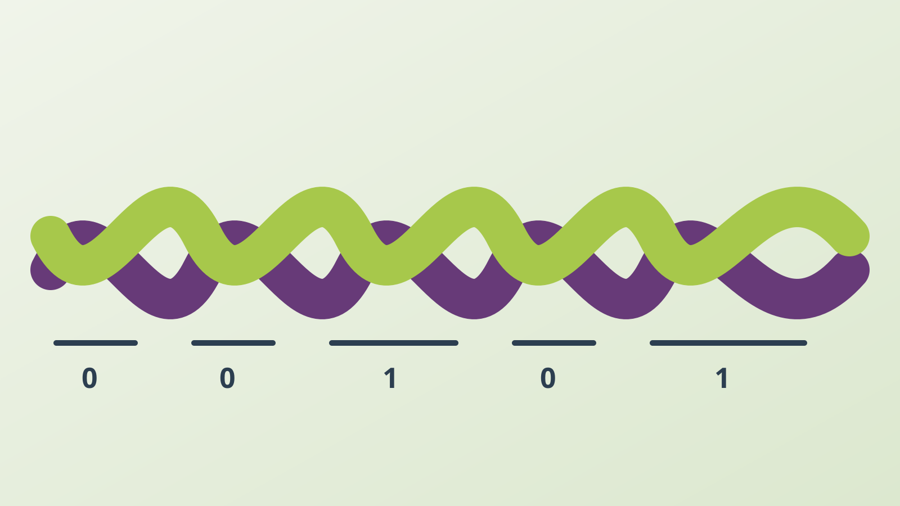

← Back to Portfolio
Research Project · Braiding
BarCord
組紐の色の反復パターンと構造区間の長さを変化させ、特別な電子部品を追加せずに紐そのものへ情報を埋め込むコードです。

Physical Representation
選択した位置でtwo-strand twistを加えることで、紐の二つの特徴を変化させます。
- Color pattern: 色糸の上下関係と反復パターンで0と1を表す。
- Segment length: 短い／長い構造区間で0と1を表す。
Encoding
- 情報をバイナリ列に変換する。
- 基礎となる紐構造を組む。
- 選択した位置にtwo-strand twistを挿入する。
- 色パターンまたは区間長の変化としてビット列を形成する。
Decoding
現在のプロトタイプでは、色パターンまたは構造区間の長さを目視し、それぞれを0または1として手作業で読み取ります。